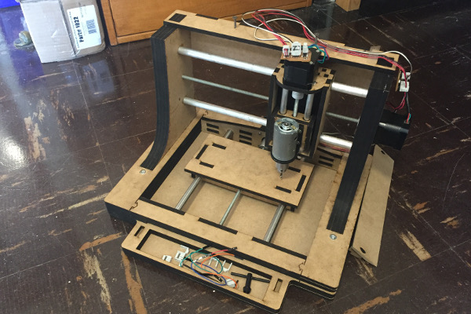
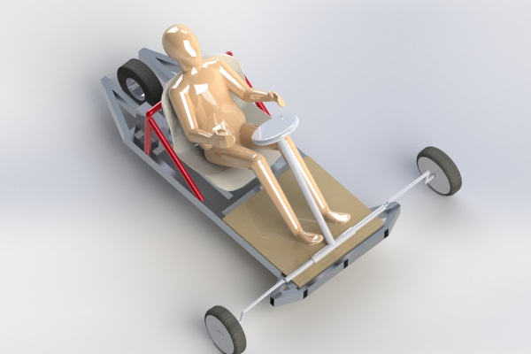
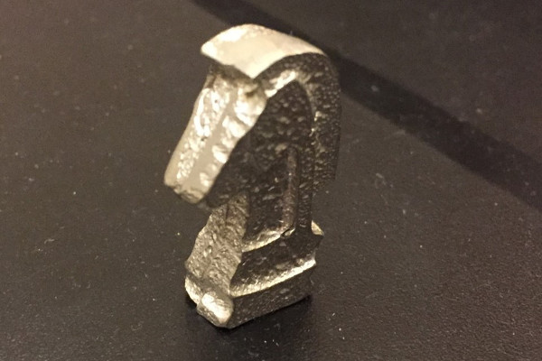
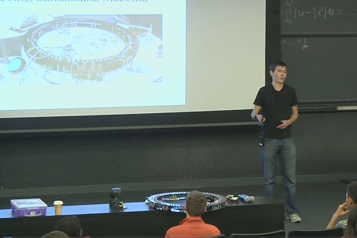
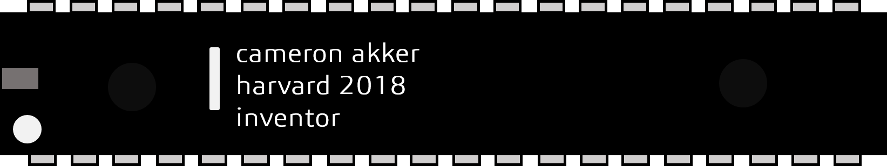

Cameron Akker
My name is Cameron Akker and I'm a full-stack inventor.
No, not a full-stack developer - I partake in projects that span the entire spectrum of creating things. I'm one part mechanical engineer, two parts electrical engineer, one part software developer, and two parts entrepreneur.
Projects I've Completed
Director of HackHarvard 2016

DIY 3-Axis PCB Milling Machine

Custom Personal Electric Vehicle

FPGA (Virtex-II) Programming

Casted Knight Chess Piece
More projects
I like to get my hands dirty. I do a lot of projects. And I believe in good documentation.
Several of the projects here were completed as part of classes as part of my undergraduate education at Harvard. On nearly all of them, the class project was loosely constrained - the project I completed was of my own inspiration and execution. In other words, each of these projects was my idea (within general project guidelines) unless specified otherwise.
Research Notes

Director of HackHarvard 2016
DIY 3-Axis PCB Milling Machine
Custom Personal Electric Vehicle
FPGA (Virtex-II) Programming
Casted Knight Chess Piece
More projects
My website includes Projects as well as my blog Research Notes. I believe the best explanations are the simple explanations - the ones that make you go "oh, ok" instead of "eureka I found it!" I'm writing with the purpose of accessibility - I want people to understand that difficult subjects can be learned without having to spend hours poring over textbooks.
These Research Notes articles range in topics from calculus to using Eagle for PCB design. They are the articles I wish I had when I was trying to learn these topics. Each article is written assuming little to no experience in its subject matter.
